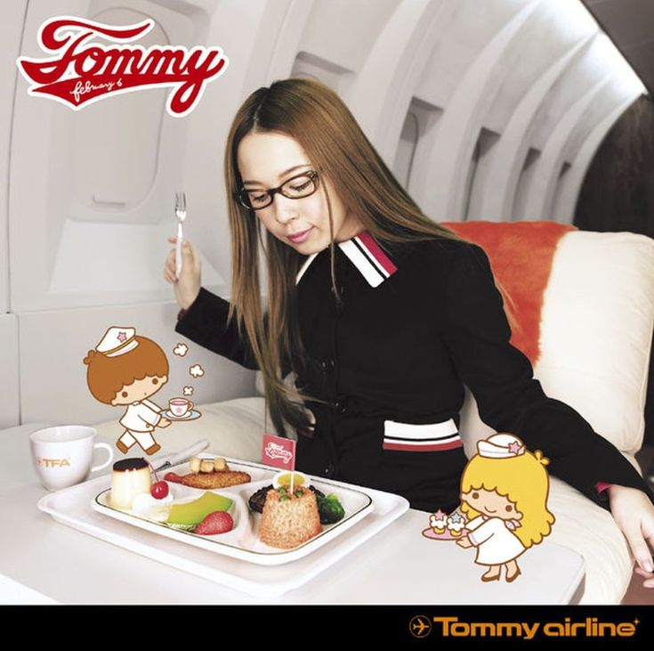
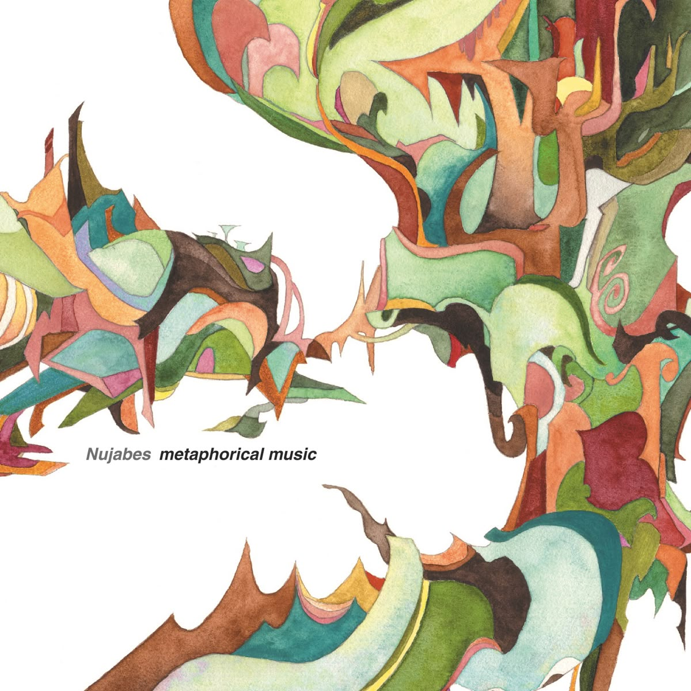
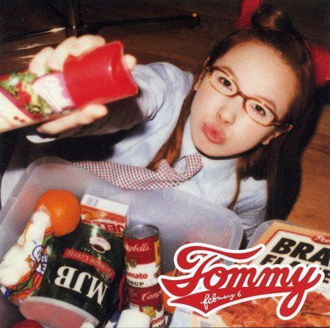
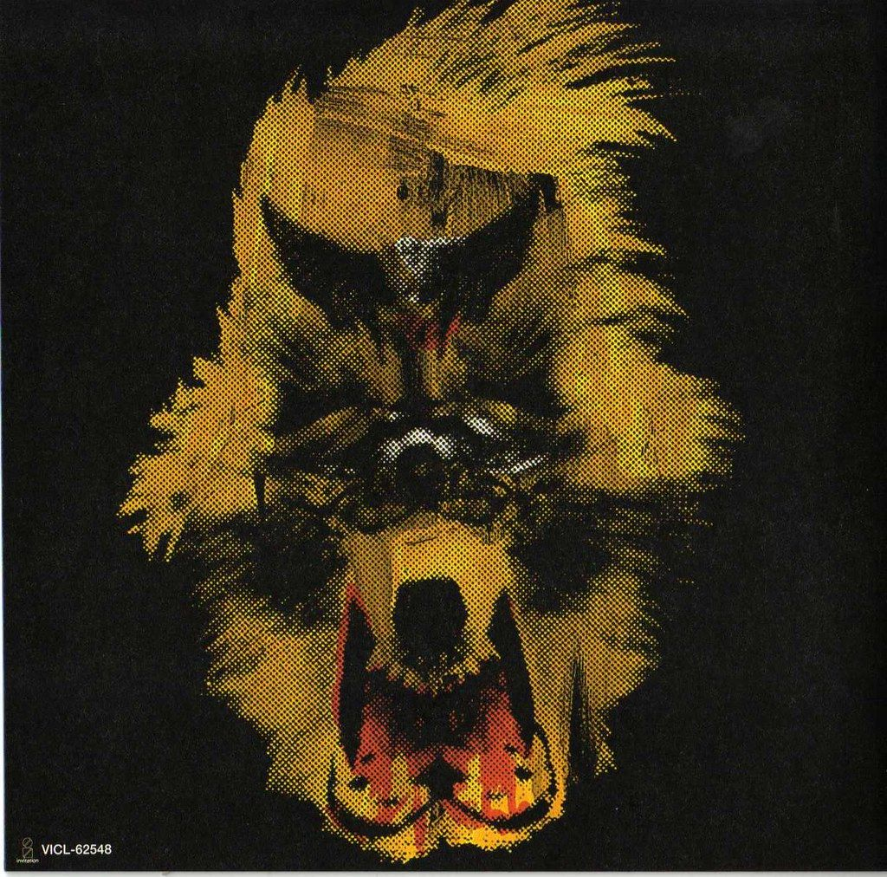
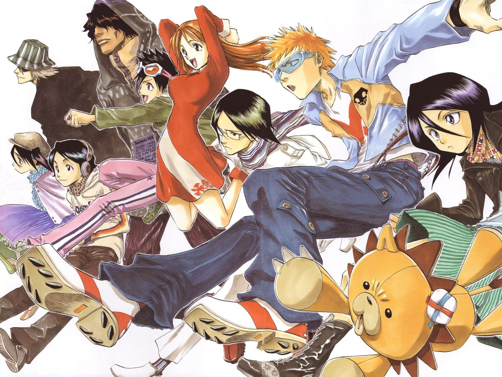
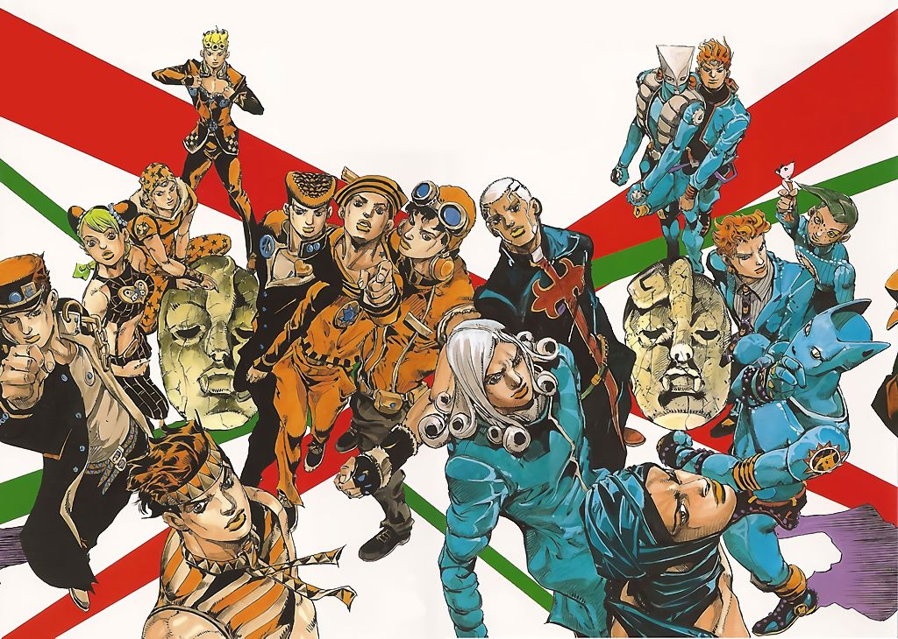
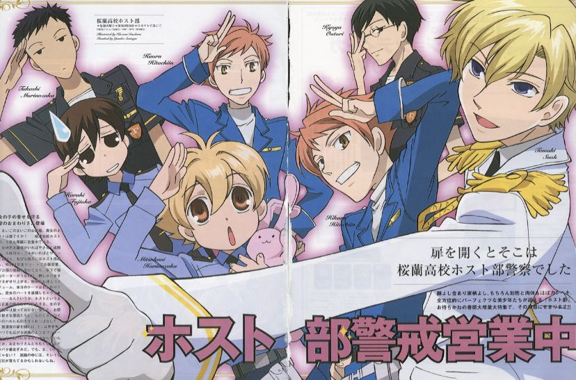
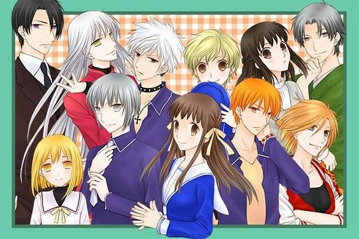
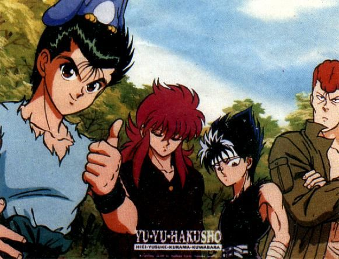

I listen to v-kei, city pop, 2nd gen. k-pop, j-rock, etc! >ᴗ<
My favorite albums from some listed are:

Tommy Airline
Tommy February6
Voyage S. Retour
Malice Mizer

Metaphorical Music
Nujabes

Tommy Feb6
Tommy February6

Darker T. Darkness
BUCK TICK
My favorite genres of anime are shounen, shoujo, and seinen ♡

My top 5 are Bleach, JJBA, FMAB, Kuroko's Basketball, and Monster. BUt, to mix everything, my fav/comfort animes are :

BLEACH (2003)

Jojo's Bizzare Adventure (2012)

Ouran Host Club High School (2006)

Fruits Basket (2019)

Yu Yu Hakusho ! (1992)